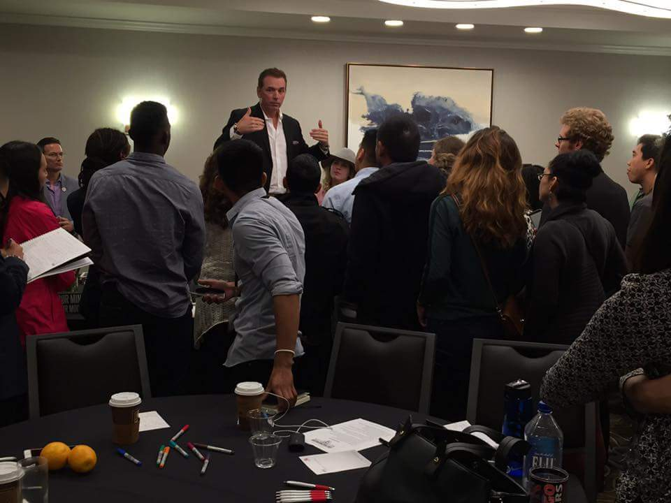
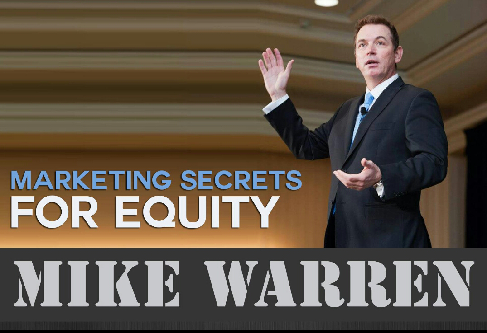
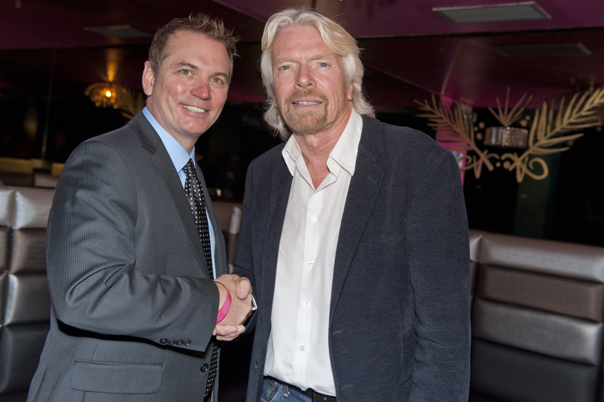
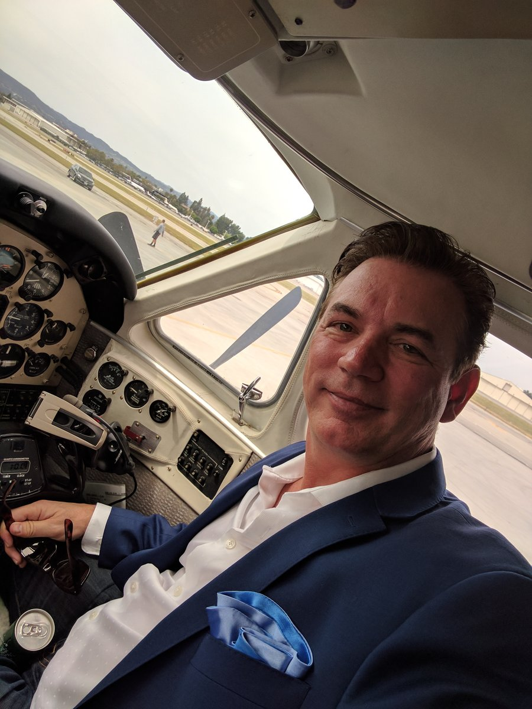
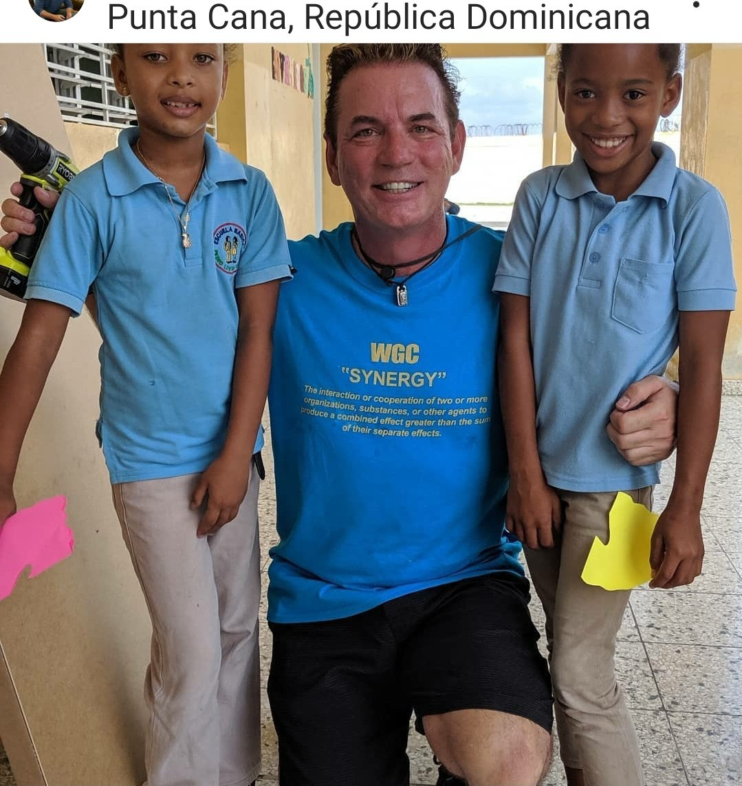

My Story
It Started With a Question Nobody Could Answer
When Mike Warren walked into his first private equity firm over 35 years ago, he asked a simple question: why do most business acquisitions fail? Nobody had a good answer. The brokers blamed the buyers. The buyers blamed the sellers. The banks blamed everyone. But nobody had a system to prevent the failures in the first place.
That question became an obsession. Over the next three decades, across three private equity firms and more than 5,000 transactions, Mike didn't just learn how deals work. He cataloged how they break. Every overleveraged purchase, every inflated projection, every seller who hid declining revenue behind creative accounting. He saw it all, documented it all, and eventually built a methodology to stop it all.

Building the Bulletproof Methodology
The problem with business acquisitions isn't that good deals don't exist. It's that most buyers can't tell the difference between a good deal and a disaster until it's too late. Banks will approve loans on businesses that look profitable on paper but can't actually service their debt. Brokers will present deals with seller-adjusted numbers that evaporate the moment a new owner takes over.
Mike built the Bulletproof Methodology to cut through all of it. Non-negotiable financial criteria that every deal must pass before a dollar changes hands. A debt coverage ratio of 2x or higher with all fees included. An earnings multiple at or below 3x. A minimum of $100,000 in verified annual cash flow. Three months of working capital on hand. These aren't suggestions. They're floors.
The result is a system where buyers don't hope a deal works out. They know it will, because the math was proven before the ink dried.
"I got tired of watching good people lose everything on bad deals. So I built a system where that can't happen."
From Deals to Teaching
For years, Mike kept the methodology to himself and his firms. He didn't need to teach anyone. The deals spoke for themselves. But he kept meeting the same person over and over: a smart, successful corporate professional who wanted out. They had the savings, the work ethic, and the ambition to own a business. What they didn't have was a system to avoid the landmines.
These weren't naive people. They were executives, engineers, IT directors, healthcare professionals. People who had spent decades building careers and nest eggs. And they were about to risk it all on a business acquisition with no framework for evaluating whether the deal would actually work.
That's when Mike started teaching. Not because he needed another revenue stream, but because watching qualified people fail at something he'd solved felt like a waste. He'd already cracked the code. The question was whether he could transfer it.

Over the years, Mike's work has put him in rooms with some of the most recognized names in business and entrepreneurship. From Richard Branson to Steve Wozniak to Kevin Harrington, the relationships aren't built on fame. They're built on a shared belief that business ownership is the most reliable path to financial freedom.
Skin in the Game
Most business coaches sell you a course and wish you luck. Mike does something no one else in his industry is willing to do: he buys businesses alongside his clients.
The equity partnership model is simple. Mike and his team don't just advise on deals. They co-own them. They put their own capital, reputation, and deal-making infrastructure behind every acquisition. If the deal fails, Mike loses too. That alignment of incentives changes everything about how deals get evaluated, structured, and closed.
It's the reason Mike's criteria are so strict. When your own money is on the line, you don't cut corners on due diligence. You don't stretch to make a marginal deal work. You walk away from anything that doesn't meet the standard, because the standard is what protects everyone.
When he's not analyzing deals or coaching clients, Mike is a licensed pilot, an avid snowmobiler, and someone who believes that building a life worth living is the whole point of building a business in the first place.
He's also a seven-time bestselling author, with titles ranging from business acquisition strategy to real estate investing to credit optimization with the legendary Jay Conrad Levinson of Guerrilla Marketing fame.

Beyond the Deal
Success without purpose is just accounting. Mike has always believed that business ownership creates the freedom to do meaningful work beyond the balance sheet. He's been recognized as a "Social Business Icon" by Unite4:Good for his philanthropic efforts, and has participated in projects ranging from rebuilding schools in the Dominican Republic to mentoring young entrepreneurs who don't have access to traditional business education.

What's Next
Today, Mike operates across multiple brands and platforms. DealScore Pro gives aspiring business owners free tools to evaluate deals before they commit. The Buyer's Brief delivers real-world deal analysis three times a week. BizBuyEmpire provides the coaching and partnership infrastructure to close deals with confidence. And the Bulletproof Methodology continues to evolve with every transaction.
The mission hasn't changed since day one: help smart people buy great businesses without risking everything they've built. The only thing that's changed is the scale.